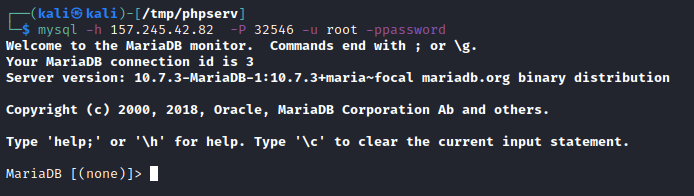

login
To login in a mysql database
The mysql utility is used to authenticate to and interact with a MySQL/MariaDB database.
mysql -u [USERNAME] -h [SERVER] -P [PORT] -p[PASSWORD]
• username
◇ The -u flag is used to supply the username
• password:
◇ If we pass a password shouldn't be any spaces between '-p' and the password
◇
For Security Reasons the -p flag
should be passed empty, so we are prompted to enter the password and do not pass it directly on the command line since it could be stored in cleartext in the
bash_history• host:
◇ When we do not specify a host, it will default to the
localhost server
◇ We can specify a remote host and port using the
-h and
-P flags
◇ The default port is 3306
example: example:mysql -u awdmgmt -pUChxKQk96dVtM07 -h 10.234.61.65